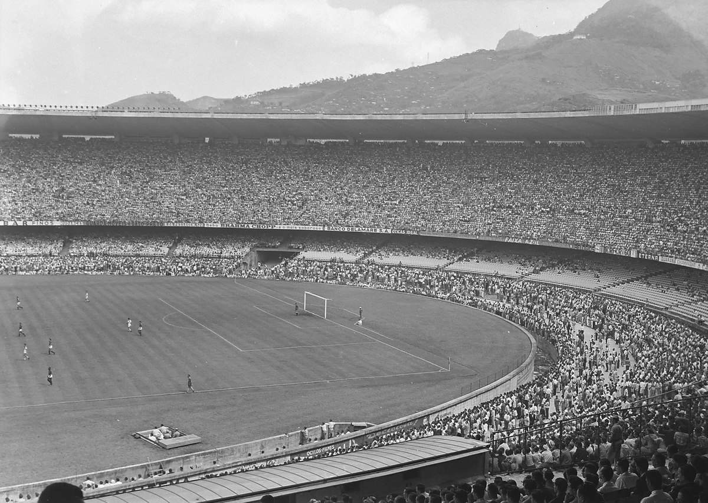

Historia de los mundiales

Primer mundial (1930)
La Copa Mundial de la FIFA Uruguay 1930 fue la primera edición del Campeonato Mundial de Fútbol organizado por la FIFA. Se desarrolló en Uruguay entre el 13 y el 30 de julio de 1930. La FIFA decidió entregar la organización del torneo a Uruguay en conmemoración del centenario de la Jura de la Constitución, que la nación celebraba durante julio de ese mismo año, entre otros motivos. En el torneo participaron 13 selecciones nacionales (12 invitadas más el organizador), divididas en 4 grupos: 3 grupos de 3 equipos y un grupo de 4 equipos.
Los primeros dos encuentros en la historia de la Copa Mundial tuvieron lugar simultáneamente el 13 de julio, fecha en la que Estados Unidos se impuso a Bélgica por 3:0, mientras que Francia superó a México por 4:1. El primer tanto de la competición fue anotado por el jugador francés Lucien Laurent. Las selecciones de Argentina, Estados Unidos, Uruguay y Yugoslavia accedieron a las semifinales tras imponerse en sus respectivos grupos. En la final, el anfitrión Uruguay venció a Argentina por 4:2, ante más de 68 000 espectadores, ganando su primer título mundial organizado por la FIFA.
Maracanazo
Maracanazo (en portugués: Maracanaço) es el nombre con el que se conoce a la victoria de la selección de fútbol de Uruguay en el partido final de la Copa Mundial de Fútbol de 1950 frente a la selección de fútbol de Brasil. Contra todo pronóstico, Uruguay ganó a Brasil por 2-1 en el Estadio Maracaná de Río de Janeiro. Por extensión, el término se ha generalizado para definir a aquella victoria de un equipo o deportista, preferentemente una final, en campo ajeno y teniendo todos los factores en contra.
Para los aficionados brasileños, la victoria uruguaya fue una tragedia, comentada como la peor derrota deportiva del país hasta entonces. Se cancelaron los preparativos de una celebración que era obvia para muchos. Desde entonces, la palabra Maracanazo ha quedado como expresión de derrota o desastre imprevisto para los brasileños.
En claro contraste, la celebración y el éxtasis fueron inmensos para los uruguayos. La inesperada victoria llegaba a oídos de aquel país gracias al inolvidable relato de Carlos Solé. La gente se volcó a las calles a festejar lo que, en un principio, parecía un sueño inalcanzable. El desconcierto era tal tras la victoria uruguaya, que todos los hinchas brasileños enmudecieron completa y sorprendentemente apenas terminaba el partido, donde la concurrencia de uruguayos era de apenas un centenar de personas, a tal punto de que los únicos sonidos que se escuchaban eran los del plantel celeste.
La mano de Dios
Es el nombre con el que se conoce al gol anotado con dicha parte del cuerpo por el futbolista argentino Diego Maradona en el partido entre Argentina e Inglaterra por los cuartos de final de la Copa Mundial de Fútbol de 1986, disputado el 22 de junio, en el Estadio Azteca de la Ciudad de México. El otro fue el llamado «Gol del Siglo», también marcado por Maradona. El propio Maradona declaró luego del partido que el tanto lo había marcado "un poco con la cabeza y un poco con la mano de Dios", y a partir de allí la prensa mundial lo bautizó.
En 2005, 19 años después del polémico gol, Maradona confesó, en el programa La Noche del 10, que el gol efectivamente fue con la mano. Un hecho que generó opiniones diversas a lo largo del mundo.3 Mientras algunos lo apoyaron por decir la verdad y admitir su culpa, otros lo criticaron debido a la demora con que se produjo, ya que una vez finalizado el partido éste no podía ser modificado.
A comienzos de 2008 el diario The Sun publicó una nota en la que daban a entender que Maradona durante una visita a Inglaterra habría pedido perdón por lo que se describe como «el infame gol de La Mano de Dios».
Mineirazo
El partido de fútbol de la Copa Mundial de 2014 disputado el 8 de julio de ese mismo año, fue un encuentro de semifinales que enfrentó al seleccionado local de Brasil con el combinado de Alemania y que culminó con un marcador 7-1 a favor de la selección europea. Luego de haber finalizado el encuentro, se hizo una analogía del mismo con el histórico episodio conocido como Maracanazo, en el cual Brasil (siendo organizador del Mundial, al igual que en 2014) perdió por dos goles a uno frente a Uruguay el partido definitorio de la Copa Mundial de 1950, en el Estadio Maracaná de Río de Janeiro.
Al mismo tiempo y debido a que este encuentro por semifinales del mundial 2014 se disputó en el Estadio Mineirão (ubicado en Belo Horizonte, capital del estado de Minas Gerais) este suceso pasó a la historia del fútbol mundial siendo apodado como el Mineirazo1 (en portugués: Mineiraço)2 por una parte de la prensa oral y escrita.
El encuentro significó la peor derrota de la selección de Brasil en su historia futbolística,3 solo equiparable al 0:6 que recibió de la selección de Uruguay en el Campeonato Sudamericano de Selecciones de 1920.4 Además, cortó una racha de 39 años sin derrotas de dicha selección jugando como local en una competencia oficial, dado que la última había ocurrido en 1975, cuando perdió 3:1 en el mismo Estadio Mineirão, por la Copa América con Perú, equipo que obtuvo ese torneo.5 Brasil había mantenido el invicto durante 62 encuentros.
Màximos ganadores
▪ 5 títulos: ▪ Brasil (1958, 1962, 1970, 1994 y 2002)
▪ 4 títulos ▪ Italia (1934, 1938, 1982 y 2006) ▪ Alemania (1954, 1974, 1990 y 2014)
▪ 2 títulos: ▪ Francia (1998 y 2018) ▪ Argentina (1978 y 1986) ▪ Uruguay (1930 y 1950)
▪ 1 título ▪ España (2010) ▪ Inglaterra (1966)